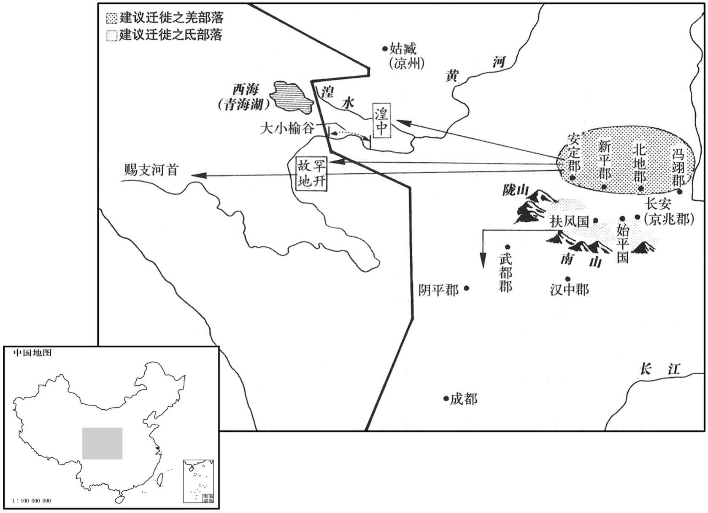
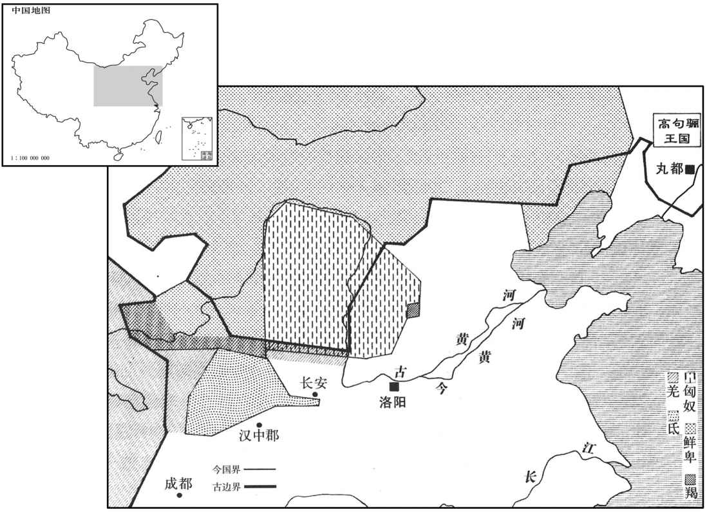

卷次与人物目录 / 卷83
资治通鉴 · 卷第八十三【晋纪五】
公元299年至公元300年 · 原文、白话与胡三省注
本页按胡注本编排保存全卷内容。白话采用本站所据译本，未可靠对应的内容另列说明；事件标题用于定位，并非原书文字。
本卷共59段原文，59段有译文对应，0段缺译或待核对。
卷第八十三【晋纪五】起屠维协洽（己未），尽上章涒滩（庚申），凡二年。
卷首原文与注释
孝惠皇帝上之下
公元299年 · 晋孝惠皇帝元康九年
元康九年〔己未、二九九）〕
上传原文的注释括号有异常，字符原样保留；无法可靠划分的段落默认全文显示。
本年事件索引（现代整理）
- 孟观大破氐军，俘获齐万年
- 江统作《徙戎论》，主张迁徙关中戎狄
- 江统追述戎狄内迁与中原边患
- 江统以羌乱为鉴，反对将氐羌迁入关中
- 江统主张将关中羌氐迁回边地
- 江统驳斥迁徙氐羌会激起新乱的担忧
- 江统警告并州匈奴部众强盛，内迁将成大患
- 江统以迁徙句骊人为例，警示夷狄内迁的风险
- 江统主张将羌胡遣返故地以安定中原
- 贾谧轻慢太子遭斥，贾后将成都王颖调离京师
- 高密王司马泰去世
- 裴頠等谋废贾后，担忧诸王争权引发大乱
- 裴頠升任尚书仆射，推辞专掌门下事务未成
- 惠帝昏愚，权臣专政，鲁褒作《钱神论》讥刺时弊
- 裴頠批评朝臣苛察细过、刑法失衡
- 刘颂制定九班考课制，贾、郭当权使其未能实行
- 韦忠拒绝裴頠征辟，斥其依附贾后
- 索靖预言洛阳宫门铜驼将陷于荆棘
- 日食
- 郭槐临终劝贾后善待太子，贾后仍谋害太子
- 江统劝太子勤学守礼、节用并亲近贤臣
- 贾谧挑唆贾后废太子，贾后伪造怀孕谋立他人之子
- 刘卞劝张华废贾后，张华以君臣名分拒绝
- 贾后灌醉太子，命潘岳伪造太子谋逆文书
- 贾后逼惠帝废太子，张华、裴頠谏阻未果
春，正月孟观大破氐众于中亭，〔水经注：扶风美阳县有中亭水，亦谓之中亭川，在美阳县西。〕获齐万年。
春季，正月，孟观在中亭击溃氐人，抓获齐万年。
太子洗马陈留江统〔洗，悉荐翻。〕以为戎、狄乱华，宜早绝其原，乃作徙戎论以警朝廷曰：「夫夷、蛮、戎、狄，地在要荒，〔周礼：九州岛之外，谓之蕃国，谓东夷、南蛮、西戎、北狄也。国语曰：蛮、九要服，戎、狄荒服。韦昭注曰：要者，要结好信而服从之。荒者，言荒忽无常也。要，一遥翻。〕禹平九土而西戎即叙。〔孔安国曰：言荒服之外，流沙之内，皆就次叙班固曰：即叙者，言就而叙之。〕其性气贪焚，〔焚，卢含翻。〕凶悍不仁。悍，侯罕翻，又下罕翻。〕四夷之中，戎、狄为其，弱则畏服，强则侵叛。当其强也，以汉高祖困于白登、孝军于霸上。及其弱也，以元、成之微而单于入朝。此其已然之效也。〔单，音禅。朝，直遥翻。〕是以有道之君牧夷、狄也，惟以待之有备，御之有常，虽稽颡执贽〔周礼：蕃国世一见一各以其所贵宝为贽。稽，音敨。〕而边城不弛固守，〔汉元帝时，匈奴单于请罢边塞守备，侯应以为不可。所谓不弛固守也。〕强暴为寇而兵甲不加远征，〔周宣王薄伐猃狁，至于太原，尽境而返，比于嶎，驱之而已，所谓不加远征也。〕期令境内获安，疆埸不侵而已。
太子洗马陈留人江统，认为戎人、狄人祸患中华，应当尽早断绝为祸的根源，于是作《徙戎论》以提醒朝廷，说：“东夷、南蛮、西戎、北狄，处于极边远的地区。禹平定九州而西戎服从了安排。西戎禀性贪婪、凶暴强悍，无仁爱之心。四夷之中，戎、狄最为突出，势力衰弱则敬畏服从，势力强大就侵扰叛乱。当他们强盛时，像汉高祖那样的实力也被困于白登，像孝文帝那样的实力也曾驻军霸上。等到他们衰弱时，像汉元帝、成帝时那样的微弱国力，单于还得来朝见。这些都是已经发生过的实证。因此有道的君王处理夷、狄事务，就是防御夷狄常备不懈，虽然他们叩头进贡宝物珍奇，边城并不放松守备，当他们起来作乱时，军队也不加以远征，就是希望境内安宁，疆域不受侵扰而已。

及至周室失统，诸侯专征，封疆不固，利害异心，戎、狄乘间，得入中国，〔如戎伐鲁济西，山戎病燕，狄伐卫、长狄大三国之类。间，古苋翻。〕或招诱安抚以为己用，〔如申、缯以西戎攻杀周幽王，晋迁陆浑之戎于伊川，与之掎角，以败秦师于殽，楚以蛮军与晋战于鄠陵。诱，音酉。〕自是四夷交侵，与中国错居。〔如徐夷在齐、晋、鲁、宋之间，鲜虞介燕、晋之境，赤狄居上党之地，陆浑戎居伊、洛之间，义渠、大荔居秦、晋之域，戎蛮子居梁、霍之地。〕及秦始皇并天下，兵威旁达，攘胡，走越，当是时，中国无复四夷也。〔事见秦纪。〕
“等到周王朝失去纲纪，诸侯恣意征伐，因此，彼此的疆域不稳定，诸侯因为利害关系而各存异心，西戎、北狄得以乘隙进入中原，有的诸侯招抚利诱他们为自己所用，从此四方各族交相杂入，与中原人错综而居。到秦始皇统一天下，兵威震邻，打击胡人，驱逐越人，到这时，中原地区不再有各种夷族了。

汉建武中，马援领陇西太守，讨叛羌，徙其余种于关中，〔种，章勇翻。〕居冯翊、河东空地。数岁之后，族类蕃息，〔蕃，扶元翻。〕既恃其肥强，且苦汉人侵之；永初之元，群羌叛乱，覆没将守，屠破城邑，邓骘败北，侵及河内，十年之中，夷、夏俱敝，任尚、马贤，仅乃克之。〔事并见汉纪。按汉光武十一年，马援讨羌，降之。安帝永初元年，羌反。自建武十一年至永初元年，凡七十三年。「数岁之后」，当作「数十岁之后」。将，即亮翻。守，式又翻。骘，之日翻。夏，户雅翻。任，音壬。〕自此之后，余烬不尽，小有际会，辄复侵叛，〔复，扶又翻。〕中世之寇，惟此为大。魏兴之初，与蜀分隔，疆埸之戎，一彼一此。武帝徙武都氐于秦川，〔事见六十八卷汉献帝建安廿三年。〕欲以弱寇强国扞御蜀虏，此盖权宜之计，非万世之利也；今者当之，已受其敝矣。
3“东汉建武年间，马援担任陇西太守，征讨叛乱的羌人，迁徙羌人残余到关中，让他们居住在冯翊、河东的空荒之地。数年后，他们人口繁衍生息，既倚仗自己的富强，又苦于汉人的骚扰，东汉永初元年，羌人叛乱，消灭了当地守军，屠城破邑，邓骘也被击败。羌人侵入河内郡。十年之中，羌汉都衰败了，任尚、马贤仅仅是压制住他们而已。从此以后，残余火种不灭，稍有机会，他们就不断骚扰叛乱。中世时的寇患，以这支羌人最严重。魏兴盛之初，与蜀国分隔，疆场上的戎人，也分属两国，魏武帝迁徙武都的氐人到秦川，想以此而削弱乱寇增强国力，抵御蜀国。这实际是权宜之际，而不是从万世的利益上考虑的。今天我们所承受的这个现实，就已经遭受到那权宜之计的弊病的影响了。
夫关中土沃物丰，帝王所居，〔周都丰、镐，秦都咸阳，汉都长安，皆关中之地。〕未闻戎、狄宜在此土也。非我族类，其心必异。而困其衰敝，迁之畿服，〔畿服，谓邻畿千里之内。〕士庶翫习，侮其轻弱，使其怨恨之气毒于骨髓；至于蕃育众盛，〔蕃，扶袁翻。〕则坐生其心。以贪悍之性，挟愤怒之情候隙乘便，辄为棋；〔横，户孟翻。〕而居封域之内，无障塞之隔，掩不备之人，收散野之积，〔积，子赐翻，聚也。〕故能为祸滋蔓，暴害不测，此必然之势，已验之事也。当今之宜，宜及兵威方盛，众事未罢，徙冯翊、北地、新平、安定界内诸羌，着先零罕幵、析支之地，徙扶风、始平、京兆之氐，出还陇右，着阴平、武都之界，〔先零、罕幵、析支之地，自湟中西至赐支河首。阴平、武都，旧白马氐地也。着，直略翻。零，音怜。幵，苦坚翻。〕廪其道路之粮，令足自致，〔「廪」当作「禀」，给也；下廪粮同。〕各附本种，〔种，章勇翻。〕反其旧土，使属国、抚夷就安集之。〔属国都尉及抚夷护军也。〕戎、晋不杂，并得其所，纵有猾夏之心，〔孔安国曰：猾，乱也；夏，华夏也。夏，户雅翻。〕风尘之警，则绝远中国，隔阂山河，〔远，于愿翻。阂，与碍同。〕虽有寇暴，所害不广矣。
“关中土地服沃，物产丰富，是帝王居住的地方，没有听说西戎、北狄应当在这块土地上居住。不属于我们的族类，他们的想法必定不同。但因为他们衰弱，把他们迁到离京城不远的地方，士人百姓习以为常，玩忽对待，欺侮他们的软弱，使他们的怨恨刻骨铭心，一旦人口繁育强盛，便产生反叛之心。以他们贪婪强悍的本性，带着愤怒的心情，等候机会合适，就伺机叛乱。他们居住在封疆之内，没有障碍工事阻隔，抢掠没有防备的人，收掠散野的财物，所以能够成为祸患而迅速蔓延，危害不可测度，这种必然的趋势，是已经验证的事实。当今最好的办法是，趁军队威势正旺盛，战时的一切都未取消，迁徒冯翊、北地、新平、安定界内的各部落羌人，安置在先零、罕、析支等地；迁徒扶风、始平、京兆的氐人，让他们出去还归陇右，安置在阴平、武都地区，发给路上所需的口粮，足以使他们自己到达。各自归附本族，返回故乡，让属国都尉、抚夷护军等官员依所辖地区集中安置他们。这样，西戎人与晋国人不相杂居，各得其所。即使他们有为乱华夏之心，兴起战乱的预兆，也与中原相隔极远，隔山阻河，虽然有敌寇作乱，所危害的地区也不会太广泛。
难者曰：氐寇新平，关中饥疫，百姓愁苦，咸望宁息；而欲使疲悴之众，徙自猜之寇，恐劫尽力屈，绪业不卒，〔难，乃旦翻。悴，栔醉翻。卒，子恤翻，终也。〕前害未及弭而后变复横出矣。〔复，扶又翻。〕答曰：子以今者群氐为尚挟余资，悔恶反善，怀我德惠而来柔附乎﹖曰：无有余力，势穷道尽故也。然则我能制其短长之命而令其进退由己矣。夫乐其业者不易事，〔乐，音洛。〕安其居者无迁志。方其自疑危惧，畏怖促遽，〔怖，普布翻。〕故可制以兵威，使之左右无违也。迨其死亡流散，离籂未鸠，〔籂，他历翻。尔雅曰：籂，远也。鸠，集也。〕与关中之人，户皆为雠，〔谓氐、羌之反，暴掠平民，关中之人怨毒之，户皆为雠敌。〕故可遐迁远处，令其心不怀土也。夫圣贤之谋事也，为之于未有，治之于未乱，〔治，直之翻。〕道石着而平，德不显而成。其次则能祸为福，因败为功，值困必济，遇否能通。〔否，皮鄙翻。〕今子遭敝事之终而不图更制之始，〔更，工衡翻。〕爱易辙之勤而遵覆车之轨，何哉！〔车覆于前，灴可遵其辙，当易路而行；若遵覆车之床，则后车又将覆矣。〕且关中之一百余万口，率其少多，〔率，列恤翻，约数也。少，诗沼翻。〕戎、狄居半，处之与迁，必须口实。〔口实，谓粮食也。处，昌吕翻。〕若有穷乏，糁粒不继者，〔糁，桑颔翻。以米和羹也。〕故当倾关中之谷以全其生生之计，必无挤于沟壑而不为侵掠之害也。〔氐、羌穷乏，势必聚而侵掠，晋朝欲弭其害，故当倾谷以给之。挤，子西翻，又子细翻。〕今我迁之，传食而至，〔谓所过郡县递给其食也。传，直恋翻。〕附其种族，自使相赡，而秦地之人得其半谷，〔言关中居人，戎、狄居半，今迁使归其旧地，则秦中百姓将食其所积之谷，以约率之，正得常居半谷也。种，章勇翻；下余种同。〕此为济行者以廪粮，遗居者似积仓，〔遗，于季翻。〕宽关中之逼，去盗贼之原，〔去，羌吕翻。〕除明夕之损，建终年之益。若惮蹔举之小劳〔蹔，与暂同。〕而忘永逸之弘策，惜日月之烦苦而遗累世之寇敌，非所谓能创业垂统，谋及子孙者也。
“驳难的人说：氐人叛乱刚刚平定，关中饥馑，流行时疫，百姓愁苦，都盼望着安定休息；而要让疲惫病弱的人去迁移心存疑忌的敌人，恐怕会士气耗尽而力量不足，完成不了这一事业，这样，先前的灾害还没来得及消除，新的变故又会突然出来。回答说：您认为现在氐人是还依靠剩余的资财，悔恨自己的过错而归于正道，感念我们的好意恩惠而来顺从归附呢，还是走投无路，心智与兵力都已困乏，害怕我们武力剿除才到这一地步呢？我说：是没有余力，走投无路的缘故。这样我们就能掌握他们的命运而使他们的进退都听从我们的调遣了。喜欢自己职业的人不会调换工作，满意自己住所的人没有迁居的想法。这时，他们正疑心有危险而惧怕，恐怖而紧张急迫，所以能够用武力的威慑来制服，使他们一点都不敢违抗。趁着他们死亡逃离，流散各处，远离而没有聚集，加之他们与关中人，户户都是仇敌，所以能够把他们迁到僻远处，让他们不怀念这个地方。圣贤之人谋事，在事情未发生时就进行处置，在尚未动乱时就去治理，至道未显现天下就已平定，恩德未炫露事情就已成功。其次则能够转祸为福，转败势为成功，陷于困境能够渡过，遭遇阻塞而得疏通。现在您承受着旧措施所带来的结果而不谋求开始改变这一措施，偏爱不断变换路线而又沿着翻车的轨道， 这是为什么呢？再说关中的人口一百多万，约略计算人口比例，戎人、狄人占了一半，让他们继续居住或是迁移，都必须有口粮，如果出现欠缺，粥饭供应不能接继，就得拿出关中的全部粮食来保全他们的生计，绝没有把他们弃置沟壑而不侵扰掠夺的道理。现在我们将他们迁徒，沿途供给粮食而使他们到达，让他们归往自己族类所在地，使他们自己养活自己，而秦地的人口就能得到另一半粮食。这就是供给迁徒者以途中口粮，给留居者装满的粮仓，缓解关中的紧张，消除盗贼的根源，花费一朝一夕的开销，成就长年获益的基础。如果害怕短暂行动的小工程，而忘却一劳永逸的弘大方略，吝啬日月之间的麻烦劳苦，而给后世留下寇敌之患，这不是所说的能够创业并流传后世，为子孙后代着想的人。
并州之胡，本实匈奴桀恶之寇也，建安中，使右贤王去卑诱质呼厨泉，听其部落散居六郡。〔谓并州所统六郡也。晋书匈奴传曰：匈奴与晋人杂居，平阳、西河、太原、新与、上党、乐平，莫不有焉。质呼厨泉事见六十七卷汉献帝建安二十一年。质，齰致。〕咸熙之际，以一部太强，分为三率，〔率，读曰帅，音所类翻。〕泰始之初，又增为四；于是刘猛内叛，连结外虏，〔事见七十九卷武帝泰始七年、八年。〕近者郝散之变，发于谷远。〔谷远县，汉属上党郡，晋省，盖其地犹存旧县名也。刘昫曰：谷远，今沁源县。宋白曰：汉谷远故县，在沁源县南百五十步，孤远故城是也。晋地记云：谷远，今名孤远，后代语讹耳。郝散事见上卷四年。〕今于部之众，户至数万，人口之盛，过于西戎；其天性骁勇，弓马便利，倍于氐、羌。〔骁，坚尧翻。〕若有不虞风尘之虑，则并州之域可为寒心。〔刘渊之祸，江统固逆知之矣。〕
“并州的胡人，原本就是凶恶的匈奴强盗，东汉建安年间，派右贤王去卑诱骗呼厨泉作为人质，听任他们的部落散居在并州六个郡。魏咸熙年间，因为一支部落太强，分为三个部落。晋泰始初年，又增为四部落，这时刘猛从内部叛乱，勾结外族敌人；近年郝散之变，也发端于谷远这个地方。现在匈奴有五个部落，几万户之多，人口的兴盛，超过西戎。他们天性骁勇，擅长射箭骑马，超过氐、羌一倍，如果发生没有想到的战事的话，那么并州一带就值得忧惧。
正始中，毌丘俭讨句骊，〔事见七十五卷魏郡陵厉公正始七年。句，如字，又音驹骊，力知翻。〕徙其余种于荥阳。〔种，章勇翻。〕始百姓失职，〔民不得安于耕凿，是失职也。〕犹或亡叛，犬马肥充，则有噬啮，况于夷、狄，能不为变！但顾其微弱，势力不逮耳。〔顾，内顾也。〕
两版字句有差异，建议核对原文。
“魏正始年间，毋丘俭征讨句骊，将他们的残余迁到荥阳。刚迁徒时，只有百户；子孙繁衍，现在人数已达几千，几代之后，一定会达到繁盛。现在百姓失业，还有人流亡叛乱，犬马肥壮而众多，就会互相啃咬，何况像夷、狄那样，哪能不发生变故！他们只是感到自己微弱，势力还不能达到罢了。
夫为邦者，忧不在寡而在不安，〔论语：孔子曰：丘闻有国有家者，不患寡而患不均不患贫而患不安。〕以四海之广，士民之富，岂须夷虏在内然后取足哉！此等皆可申谕发遣，还其本域，慰彼羁旅怀土之思，释我华夏纤介之忧，〔夏，户雅翻。〕『惠此中国，以绥四方，』〔诗大雅民劳之辞。〕德施永世，于计为长也！」朝廷不能用。
“治理国家的人，忧虑不在人少而在于国家不安定，以四海的辽阔，百姓的富裕，哪里一定要异族人在其中然后才能得到满足呢！这些异族人都可以发布告示遣送，使他们还归本来的地方，慰藉他们客居怀乡的思绪，解除我们中华心中的芥蒂。《诗经》说：‘施给中原德惠，安定四方部族。’恩德施于永世，这个计策是长远的！”结果朝廷没有能够采用这个计策。
散骑当侍贾谧侍讲东宫，对太子倨傲，成都王颖见而叱之；谧怒，言于贾后，出颖为平北将军，镇邺。〔考异曰：帝纪云：「以颖为镇北大将军。」今从本传。〕征梁王肜为大将军、录尚书事；以河间王颙为镇西将军，镇关中。〔肜，余中翻。颙，鱼容翻。〕初，武帝作石函之制，非至亲不得镇关中，颙轻财爱士，朝廷以为贀，故用之。〔颙，安平献王孚之孙，太原烈王緕之子也，初袭父爵，咸宁三年，改封河间。为颖、颙各据方镇以阻兵张本。〕
散骑常侍贾谧在东宫为太子讲学，对太子态度傲慢，成都王司马颖发现后斥责他。贾谧大怒，告到贾皇后，随即发落司马颖为平北将军，镇守邺城。惠帝征召梁王司马肜任大将军、录尚书事。任命河间王司马为镇西将军，镇守关中。起初，晋武帝曾规定了一个制度，藏于宗庙的石匣之中，规定不是直系亲属不能镇守关中。司马看轻财物而爱惜士人，朝廷认为他德才兼备，可以重用他。
夏，六月，〔【章：甲十一行本「月」下有「戊戌」二字；乙十一行本同；孔本同。】〕高密文献王泰薨。〔考异曰：帝纪云「陇西王」，本传云：「泰为尚书令，改封高密。」纪误。〕
夏季，六月，高密文献王司马泰去世。
贾后淫虐日甚，私于太医令程据等；〔晋志：太医令，属宗正。〕又以簏箱载道上年少人宫，〔簏，卢谷翻。说文：竹高箧也。少，诗照翻。〕复恐其漏泄，往往杀之。〔复，扶又翻。贾模恐祸及己，甚忧之。裴頠与模及张华议废后，更立谢淑妃。〔谢淑妃，太子之母也。頠，鱼毁翻。更，工衡翻。考异曰：「模与裴頠、王衍谋废之，衍后悔而止。」今从頠传。〕模、华皆曰：「主上自无废黜之意，而吾等专行之，傥上心不为然，将若之何！且诸王方强，朋党各异，恐一旦祸起，身死国危，无益社稷。頠曰：「诚如公言。然宫中逞其昏虐，乱可立待也。」华曰：「卿二人于中宫皆亲戚，言或见信，宜数为陈祸福之戒，庶无大悖，则天下尚未至于乱，吾曹得以优游卒岁而已。」〔张华处昏乱之朝，位冠群后，而持心如此，天殆假手于赵王伦而诛之也。数，所角翻。为，于伪翻。卒，子恤翻。悖，蒲内翻。〕頠旦夕说其从母广城君，〔说，输芮翻。从，刀用翻。〕令戒论贾后以亲厚太子，贾模亦数为后言祸福；后不能用，反以模为毁己而疏之；模不得志，忧愤而卒。
皇后贾氏淫乱暴虐日甚一日，与太医令程据等人私通。还让人把路上的少年装进竹箱偷带入宫，但又怕这些少年把事泄漏出去，往往杀掉他们。贾模怕这些事牵连自己，非常忧虑。裴与贾模以及张华商议废黜贾皇后，改立谢淑妃为皇后。贾模、张华都说：“皇帝自己没有废黜皇后的想法，我们擅自进行这事，假如皇帝并不同意，那该怎么办？再说各诸侯王正当强盛时，都有各自的势力和亲近的人。恐怕一旦事情不成，招来祸患，性命丢掉而国家危殆，对国家社稷不利。”裴说：“确实如你们所说。但是皇后在宫中昏乱暴虐而肆意放任，她的麻烦很快就会来临。”张华说：“你二人都是皇后的亲戚，你们的意见她可能相信，应该多向她陈述戒惧祸福，希望她不要过分，那样天下还不至于出现祸乱，我们也就能够悠闲自在地度日了。”裴从早到晚地劝说他姨母广城君，让她告诫皇后贾氏能够亲近厚待太子。贾模也多次对皇后讲述祸福的道理，皇后听不进去，反而认为贾模这样是诋毁自己，因而疏远他。贾模善良的愿望不能达到，忧郁激愤而死去。
秋，八月，以裴頠为尚书仆射。頠虽贾后亲属，然雅望素隆，四海恮恐其不居权位。寻诏頠专任门下事，〔晋制：侍中与给事黄门侍郎同管门下事。頠为侍中，专任门下事，贾后之意也。〕頠上表固辞，以「贾模适亡，复以臣代之，〔复，扶又翻。〕崇外戚之望，彰偏私之举，为圣朝累。」〔累，力瑞翻。〕不听。或谓頠曰：「君可以言，当尽言于中宫；言而不从，当远引而去。傥二者不立，虽有十表，难以免矣。」頠慨然久之，竟不能从。〔史言华、頠顾恋禄位以殒首亡家。〕
秋季，八月，任命裴为尚书仆射。裴虽然是皇后贾氏的亲属，但是美好的声名一直广为人知，各地都惟恐他不能担当重要的职务。不久，惠帝下诏书让裴独掌门下事要职。裴上书惠帝坚持推辞，说：“贾模刚刚去世，又让我来取代他的职位，这样提高外戚的声望，显露出偏向和私情的安排，会给神圣的朝廷带来麻烦。”惠帝不同意。有人对裴说：“您有说话的机会，还应该对皇后详细地说。说了仍然不同意，那就应远远地离去。假如这两条路都不走，即使上书十次，也难以逃脱灾祸。”裴感慨了好久，但终究也没有听从。
帝为人戆騃，〔戆，陟降翻，愚也。騃，语骇翻，痴也。〕尝在华林园闻虾蟆，〔虾，何加翻。蟆，谟加翻。〕谓左右曰：「此鸣者，为官乎，为私乎﹖」〔为，于伪翻。〕时天下荒馑，百姓饿死，帝闻之曰：「何不食肉糜！」〔糜，忙皮翻，粥也。〕由是权在群下，政出多门，势位之家，更相荐托，有如互帝。〔更，正衡翻。〕贾、郭恣横，〔横，户孟翻。〕货赂公行。南阳鲁褒作钱神论以讥之曰：「钱之为体，有干、坤之象，亲之如兄，字曰孔方。〔钱圜函方，天圜而地方，故曰有干、坤之象。孔方，亦以钱体言。〕无德而尊，无势而热，排金门，入紫闼，危可使安，死可使活，贵可使贱，生可使杀。是故忿争非钱不胜，幽滞非钱不拔，怨雠非钱不解，令闻非钱不发。〔闻，音问。〕洛中朱衣、当涂之士，〔晋制：诸王朱衣、绛纱襮。当涂之士，谓当路柄用者。〕爱我家兄，怭无已已，执我之手，抱我终始。凡今之人，惟钱而已！」
惠帝为人愚鲁痴呆，一次在华林园听到蛤蟆的叫声。就问左右随从说：“ 这叫的东西，是为公事叫呢！还是为私事叫呢？”当时天下灾荒饥馑，有的百姓都饿死了，惠帝听到后说：“他们为什么不吃肉粥呢？”因此权力都由手下的小人掌握，政令出自许多部门而不能统一发布，有权势地位的人家互相推举，如同市场交易。贾氏、郭氏肆意妄为，官场上贿赂公然进行。南阳人鲁褒作了一篇《钱神论》讥讽这种现象说：“钱的形象，像天地一样有圆有方，人们亲它爱它如同兄弟，尊称它叫孔方。没有美德而倍受尊崇，没有权势而灸手可热，出入宫廷高门，可以转危为安，起死复生，变尊贵为卑贱，置活人于死地。所以愤怒争执时没有钱就不能取胜，冤屈困厄时没有钱就不能得救，冤家仇敌没有钱就不能解怨释仇，美好的声誉没有钱就不能传播。当今都城的王公贵族，权势要人，个个爱我们孔方兄而没有休止，拿钱的手，紧抱着钱始终不放松。当今的人心中只有钱罢了。”
又，朝臣务以苟察相，高每有疑议，群下各立私意，刑法不壹，狱讼繁滋。裴頠上表曰：「先王刑赏相称，〔称，尺证翻。〕轻重无二，故下听有常，群吏安业。去元康四年大风，庙阙屋瓦有数枚倾落，免太常荀寓；事轻责重，有违常典。五年二月有大风，兰台主者惩惧前事，求索阿栋之间，得瓦小邪十五处，〔兰台主者，御史台主者也，即令史之类。阿，屋之隈曲。栋，屋践也。索，山客翻。〕遂禁止太常，复兴刑狱。〔复，扶又翻；下颂复、史复同。〕今年八月，陵上荆一枝，围七寸二分者被斫；司徒、太常奔走道路，〔说文：荆，楚木也。司徒，汉丞相之职。汉制：丞相与太常掌围陵。被，皮义翻。〕虽知事小，而按劾难测，〔劾，户概翻，又户得翻。〕搔扰驱驰，各竞免负，〔负，罪负也。〕于今太常禁止未解。夫刑书之文有限而舛违之故无方，故有临时议处之制，〔言法有一定之文，而罪有故、误，情有轻、重，故制令临时随事情议处其罪。处，昌吕翻。〕诚不能皆得循常也。至于此等，皆为过当，〔当，丁浪翻。〕恐奸吏因缘，得为浅深也。」既而曲议犹不止〔曲议，谓曲法而议，自为浅深。〕三公尚书刘颂复上疏曰：〔晋志：汉成帝置三公当书，主断狱；主武以三公曹主岁尽考课州郡事。〕「自近世以来，法渐多门，令甚不一，吏不知所守，下不知所避，奸伪者因以售其情，居上者难以检其下，〔检校，检束也。〕事同议异，狱犴不平。〔犴，鱼旱翻。野狱曰犴。〕夫君臣之刀，各有所司。法欲必奉，故令主者守文；理有穷塞，故使大臣释滞；事有时宜，故人主权断。〔塞，悉则翻。断，丁乱翻；下弘断同。〕主者守文，若释之执犯跸之平也；〔事见十四卷汉文帝三年。〕大臣释滞，若公孙弘断郭解之狱也；〔事见十八卷汉武帝元朔二年。〕人主权断，若汉祖戮丁公之为也。〔事见十一卷汉高祖五年。〕天下万事，自非此类，不得出意妄议，皆以律令从事。然后法信于下，人听不惑，吏不容奸，可以言政矣。」〔考异曰：刑法志叙颂奏，续頠表之下，而云「侍中太宰汝南王亮」。按頠表引元康八年事，时亮死已久，盖志误也。〕乃下诏，「郎、令史复出法驳案者，随事以闻，」然亦不能革也。〔郎、令史，当书郎及尚书、兰台令史也。出法驳案者，谓出于法之外而为驳议也。驳，北角翻。〕
还有，朝廷官员都追求苛峻明察来比较高下，每当遇到有疑义的问题，群臣都拿出自己的解释，这样，惩罚罪犯的法律不相统一，以致案件与官司层出不穷。裴上奏表说：“先王刑罚奖赏都恰当合适，轻重的尺度统一，所以下面遵从执行起来有一定的法度，官吏们也安心自己的职业。过去元康四年刮大风，祖庙宫殿的屋瓦被风刮落了几片，就罢免了太常荀，事情轻而处罚重，违背了正常的规定。元康五年二月又刮大风，兰台主事的官员以前面的事为教训，非常害怕，在房梁屋角之间仔细寻找，找到瓦片略有歪斜的地方有十五处，于是将太常囚禁，又兴起了狱案。今年八月，陵园里有一枝粗七寸二分的荆条被砍断，司徒、太常等官员急得往来奔走，虽说知道事情不大，但如何处罚却难以预料，四处疏通，各自竞相洗刷自己，到现在对太常的囚禁还没有解除。刑法的条文有限而违反法律的缘故却多得漫无边际，所以虽有处罚时依事讨论议定处置的制度，确实不能都得以按照惯例处置。至于上述这类例证，都属于超过限度，这样恐怕奸邪的官吏就会因袭而随意判定罪的轻重。”过后，曲解法律条文随意议处的事仍然没有停止。三公尚书刘颂又上书朝廷，说：“自近代以来，法律逐渐出自许多部门，法令非常不统一，官吏不知道应该遵守什么，下面也不知道哪些是违法而应该避免的，奸诈的人因此而得售其奸，身居高位的人难以核察下属，事体相同而评论不同，结果判决不公平。国君与臣下，各有所执掌的职司。要使法令人人必须遵奉，所以要求有关负责人遵守条文；章理有不通之处，所以让大臣来解释；情况特殊，可以由国君根据情况随机相应断处。有关负责官员遵守条文，如西汉张释之公允地依法处理违反皇帝出行时清道法律的人。大臣解释不通的地方，如西汉公孙弘判处郭解案。国君根据情况随机相应断处，如汉高祖杀死丁公的行动。天下的很多事情，凡不属于这类事的，不能随意妄加议处，都应该依照法规、律令来处理。这样才能使法律取信于百姓，人们所听到的没有疑惑，官吏们没有做坏事的机会，这样就能谈论治理国家的事了。”于是朝廷下诏书说：“郎、令史等官员再遇到法律规定之外而需要讨论议处的事情，要随案件本身上报处理意见。”但是还是不能革除随意议处的弊端。
颂迁吏部尚书，建九班之制，欲令百官居职希迁，考课能否，明其赏罚。贾、郭用权，仕者欲速，事竟不行。
刘颂升任吏部尚书，建立了将官员分九个等级考核的制度，计划使朝廷大小官员在职位上都企求升迁，考核官员胜任与否，明确对官员的奖惩制度。但是贾氏、郭氏专擅朝廷大权，想当官的人都想迅速升迁，这样刘颂的计划没有能够实行。
裴頠荐平阳韦忠于张华，〔魏邵陵厉公正始八年，分河东郡之汾北为平阳郡。〕华辟之，忠辞疾不起。人问其故，忠曰：「张茂先华而不实，裴逸民欲而无厌，〔张华字茂先；裴頠，字逸民。厌，于盐翻。〕弃典礼而附贼后，此岂大丈夫之所为哉！逸民每有心托我，我常恐其溺于深渊而余波及我，况可褰裳而就之哉！」〔溺，奴狄翻。〕
裴向张华推荐平阳人韦忠。张华起用韦忠，韦忠称病推辞。有人问他原因，韦忠说：“张华华而不实，裴贪得无厌，他们抛弃朝廷的制度礼仪而依附于作乱的皇后，这难道是大丈夫所作的事吗！裴几次都有心推举我，但我常常担心他沉溺于深渊，余波会牵连我，难道能撩起衣服而跟随他吗？”
关内侯敦煌索靖，知天下将乱，〔敦，徒门翻。索，苏各翻。〕指洛阳宫门铜驼叹曰：「会见汝在荆棘中耳！」〔桐驼，魏明帝景初元年自长安徙之洛阳。〕
关内侯敦煌人索靖，预知天下将要大乱，指着洛阳皇宫门前的铜塑骆驼感叹说：“大概以后会在荆棘中看到你吧！”
冬，十一月，甲子朔，日有食之。
冬季，十一月，甲子朔（初一），发生日食。
初，广城加郭槐，以贾后无子，常劝后使慈爱太子。贾谧骄纵，数无礼于太子，〔数，所角翻。〕广城君恒切责之。〔恒，户登翻。〕广城君欲以韩寿女为大子妃，太子亦欲婚韩氏以自固，寿妻贾午及后皆不听，而为太子聘王衍少女。太子闻衍长女美而后为贾谧聘之，〔为，于伪翻。少，诗照翻。长，知两翻。〕心不能平，颇以为言。及广城君病，临终，执后手，令尽心于太子，言甚切至。又曰：「赵粲、贾午，必乱汝家事；我死后，勿复听入。深记吾言！」〔郭槐勡狠，而垂没之时，所以告弁其女者如此，盖多权数，故其智虑能及此耳。复，扶又翻；下同。〕后不从，更与粲、什谋害太子。
当初，广城君郭槐，因为皇后贾氏没有孩子， 经常劝皇后，让她慈爱太子。贾谧骄横放肆，多次对太子无礼，广城君经常严厉地叱责他。广城君打算让韩寿的女儿去作太子妃，太子也想与韩氏联姻以稳固自己的地位。韩寿的妻子贾午及皇后都不同意，却为太子聘定王衍的小女儿。太子听说王衍的大女儿长得漂亮，而皇后却为贾谧聘定了她，太子心里愤愤不平，有一些不满的话。等到广城君病危，临终时拉住贾皇后的手，叫她对太子尽心，言辞非常恳切中肯。又说：“赵粲、贾午，一定会把你家的事搅乱，我死后，不要再听任他们随便进宫，请用心记住我的话！”皇后没有听从广城君的告诫，又与赵粲、贾午图谋陷害太子。
太子幼有令名，〔事见上卷武帝太康十年。〕及长，不好学，〔长，知两翻。好，呼报翻；下同。〕惟与左右嬉戏，贾后复使黄门辈诛之为奢靡威虐。〔诱，音酉。〕由是名誉浸减，骄慢益彰，或废朝侍而纵游逸，〔朝，直遥翻。〕于宫中为帝，使人屠酤，手揣斤两，〔揣，初委翻。〕轻重不差。其母，本屠家女也，故太子好之。〔古者择女必求之名门，取甚幽闲令淑者，良有以也。好，呼到翻。〕东宫月俸钱五十万，〔俸，扶用翻。〕太子常探取二月，用之犹不足。〔探，吐南翻，又他绀翻。探取，预取也。〕又令西园卖葵菜、蓝子、鸡、裇等物而收其利。〔葵，亦菜也。鲁相公仪休拔园葵，漆室氏女曰「晋客马践吾葵，使吾终岁不良葵」是也。蓝，卢甘翻，草可以染青者也。本草图经曰：蓝实，人家蔬圃�之@畦种时，三月、四月生，苗高三四尺许，叶似水蓼，花红白色，实亦若蓼子而大，黑色。五月、六月采实。裇臂麦为之。〕又好阴阳小数，多所拘忌。〔班固曰：阴阳家盖出于羲和之官，敬顺昊天历象日月星辰，敬授人时，此其所长也。及拘者为之，则牵于禁忌，泥于小数，舍人事而任鬼神。〕洗马江统上书陈五事：「一日虽有微苦，宜力疾朝侍。〔苦，亦疾也。朝，直遥翻。〕二日宜勤见保傅，咨询善道。三日画室之功，可宜〔【章：甲十一行本「宜」作「且」；乙十一行本同；孔本同。】〕减省，〔画室，以五采绘画。室，屋也。画，与昼同。〕后园刻镂杂作，一皆罢遣。〔镂，郎豆翻。〕四曰西园卖葵、蓝之属，亏败国体，贬损闻。〔败，补谓翻。闻，音问。〕五曰缮墙正互，不必拘挛小忌。」〔挛，闾缘翻。〕太子皆不从。中舍人杜锡，〔晋志：太子中舍人四人，咸宁四年置，以舍人才学美者为之，与中庶子共掌文翰，职如黄门侍郎，在中庶子下，洗马上。〕恐太子不得安其位，每尽忠谏，劝太子修德业，保令名，言辞恳切。太子患之，置针着锡常所坐毡中，〔着，陟略翻。〕刺之流血。〔刺，七亦翻。〕锡，预之子也。〔杜预，武帝时建平吴之功。〕
太子年幼时有好的名声，长大后却不喜欢学习，只知道与周围的人嬉笑玩耍，贾皇后又让宦官之类人引诱他，使他变得奢侈挥霍又骄横暴虐。因此太子的声誉与日俱下，而骄横傲慢却日益突出，有时沉溺于游乐之中，竟不顾每日清晨问候侍奉皇帝的规定。还在宫中作买卖让手下人买卖酒肉，太子亲手拈量分量，斤两竟不差分毫。太子的母亲，原来就是屠夫家的女儿，所以太子也爱好卖肉。太子每月有五十万钱的俸禄，却经常预支两个月，还不够花销。又让西园出售蔬菜，蓝草籽、鸡、面粉等物品，以此赚钱。太子还爱好阴阳家的小把戏，平常有很多禁戒忌讳。任太子洗马职的江统给他上书，陈述五件事：“一、即使稍微有些小病痛，也应勉力支撑遵守每日清晨问侯、侍奉皇帝的规定。二、应当经常面见师傅，向他们请教为善的道理。三、雕画宫室的事，应当减少或免去，在后园雕刻之类的劳作，也同时都取消。四、西园卖菜之类的行为，损害国家的形象，也贬低自己的声誉。五、对修缮墙壁房屋之类，没有必要拘泥于琐细的忌讳。”太子都没有接受。中舍人杜锡，担心太子的地位不稳定，经常尽心尽意地劝谏，规劝太子修习有关德行品性的功业，维护好的名声，言辞恳切。太子反倒怨恨杜锡，把针放在杜锡经常坐 的毡子中，杜锡被针扎得流血。杜锡是杜预的儿子。
太子性刚，知贾谧恃中宫骄贵，不能假借之。谧时为侍中，至东宫，或舍之，于后庭游戏。詹事裴权谏曰：〔詹事，秦官，掌太子家。晋初未置詹事，宫事无大小皆由二傅。咸宁元年，置詹事，掌宫事，二傅不复领官属。〕「谧，后所亲昵，〔昵，尼质翻。〕一旦交构，则事危矣。」不从。谧谮太子于后曰：「太子多畜私财以结小人者，为贾氏故也。〔为，于伪翻。〕若宫车晏驾，彼居大位，依杨氏故事，诛臣等，废后于金墉，如反手耳。〔贾后杀杨骏，废太后，天地之所不容也。观其姑侄之间所言若此，则其心固不能一息安也。〕不如早图之，更立慈顺者，可以自安。」〔更，工衡翻。〕后纳其言，乃宣扬太子之短，布于远近。又诈为有娠，〔娠，升人翻，孕也。〕内蓁物、产其，取妹夫韩寿子慰祖养之，欲以代太子。
太子性格刚愎，知道贾谧倚仗皇后的势力而傲慢高贵，不能容忍和敷衍贾谧。贾谧当时担任侍中，到太子住处时，太子有时就把他撇在一边，自己到后边庭园游玩。太子的官员詹事裴权劝谏太子说：“贾谧是皇后所亲近溺爱的人，一旦他进谗言，那情况就危险了。”太子不接受。果然贾谧向皇后进谗言陷害太子说：“太子储备很多私财用来结交小人，就是因为图谋您的缘故。如果皇帝驾崩，他登上皇位，一定会按照您过去对杨骏、太后的做法来对待您，对他来说，诛杀我们，把您废黜并囚禁在金墉城，易如反掌。还不如早作打算，重新立一个心慈而顺从的人为太子，这样您就能够安全了。”皇后采纳了贾谧的计策，就宣杨太子的短处，并广为传播。还假称自己已怀孕，在宫内准备了禾草之类的物品等接生的工具，接来妹夫韩寿的儿子韩祖慰来抚养，计划让韩祖慰来取代太子。
于时朝野咸知贾后有害太子之意，中护军赵俊请太子废后，太子不听。左卫率东平刘卞，以以贾后之谋问张华，〔帝在东宫置卫率，初曰中卫率，泰始五年，分为左右，各领一军，愍怀在东宫，又加前后二率，谓之四率。率，户律翻。〕华曰：「不闻。」卞曰：「卞自须昌小吏，受公成拔以至今日。〔须昌县，属东平国。卞自县小吏从令入洛，历官至左卫率。〕士感知己，是以尽言；而公更有疑于卞邪！」华曰：「假令有此，君欲如何﹖」卞曰：「东宫俊乂如林，〔时江统、潘滔、王敦等皆为东宫官属。马融曰：才过千人曰俊，百人曰乂。〕四率精兵万人；公居阿衡之任，若得公命，皇太子困朝入录尚书事，〔朝，直遥翻；下同。〕废贾后于金墉城，两黄门力耳。」华曰：「今天子当阳，太子，人子也，吾又不受阿衡之命，〔华自言事任不可以伊尹自居。〕忽相与行，此是无君父而以不孝示天下也。〔【章：甲十一行本「也」下有「虽能有成犹不免罪」八字；乙十一行本同；孔本同；张校同；退斋校同。】〕况权戚汉朝，威柄不一，成可必乎！」贾后常使亲党微服听察于外，颇闻卞言，乃迁卞为雍州刺史。〔雍，于用翻。〕卞知言泄，饮药而死。〔贾后刚悍，使闻卞言而张华不以告，则华必死于贾后之手，意卞言实华泄之也。〕
这时朝廷内外都知道贾皇后有谋害太子的想法，中护军赵俊请太子废掉皇后，太子没有听从。左卫率东平人刘卞，向张华询问贾皇后的图谋，张华说：“不知道。”刘卞说：“我本来是须昌的小官吏，受您的成全提拔才有今天。为士的感念知遇之恩，所以言无不尽；可您却对我有重重疑虑！”张华说：“如果贾皇后有这种图谋，您打算怎么办？”刘卞说：“太子身边聚集着很多有才能的俊杰，护卫太子的左卫率、右卫率、前卫率、后卫率统辖着一万精兵。您身居辅导国君、主持国政的要职。如果能够得到您的命令，皇太子便入朝总领录尚书事，这样把贾皇后废黜在金墉城，只需两个小宦官的力量而已。”张华说：“现在天子治理国家，太子是他的儿子，我又没有接受主持国政的使命，匆匆与太子干这样的事，这是无视君主、无视父亲而把自己的不孝向天下展示的举动。何况有权势的外戚充满朝廷，威权不出于一处，能有一定成功的把握吗？”当时，贾皇后常常派亲近党羽隐蔽身分在朝廷外探听察看，听到了一些有关刘卞要协助太子废黜皇后的言论，于是就将刘卞调任为雍州刺史。刘卞知道自己的话已泄露出去，就服毒自杀。
十二月，太子长子虨病，〔长，知两翻。虨，甫斤翻，又方闲翻。〕太子为虨求王爵，不许。虨疾笃，太子为之祷祀求福。〔为，于伪翻。〕贾后闻之，乃诈称帝不豫，召太子入朝，。既至，后不见，置于别室，遣婢陈舞以帝命赐太子酒三升，使尽饮之。太子辞以不能饮三升，舞逼之曰：「不孝邪！天赐汝酒而不饮，〔臣子以君父为天，故以君父之赐为天赐。〕酒中有恶物邪！」太子不得已，强令至尽，〔强，其两翻。〕遂大醉。后使黄门侍郎潘岳作书草，〔潘岳此事自当赤族，其后天假手于孙秀耳。〕令小婢承福，以纸笔及草，因太子醉，称诏使书之，文曰：「陛下宜自了，不自了，吾当入了之。中宫又宜速自了，不自了，吾当手了之。并与谢妃共要劂期两发，勿疑犹豫，以致后患。茹毛饮血于三辰之下，皇天许当扫除患害，立道文为王，蒋氏为肭主。愿成，当以三牲祠北君。」太子醉迷不觉，遂依而写之。〔谢妃，太子母也。要，约也，言并以书与谢妃约，刻期内外俱发也。茹毛饮血，谓盟誓也。虨字道文。蒋氏，虨母蒋保林也。内主，言将立为后也。三牲，牛、羊、豕也。北君，北帝也。按此书不惟无征左，使常人观之，亦知其伪为而不可信。晋朝王、公、卿、尚书、黄、散视而不敢言。张华之谏，实亦不敢发贾氏之奸，姑引古义，依违而言之耳。裴頠请检校传书者，贾氏之奸无所逃矣，而亦不敢竟其说。上下相蒙，宜其人乱也。〕其字半不成，后补成之，以呈帝。
十二月，太子的大儿子司马生病，太子为他谋求亲王爵位，没有批准。司马病重，太子为他祈祷祭神求平安。贾皇后听说后，就假称惠帝身体不适，宣召太子入朝。太子进宫后，皇后不见他，把他安排在另外的房间，派婢女陈舞假称惠帝的命令赐给太子三升酒，让他全部喝掉。太子推辞说喝不了三升，陈舞胁迫说：“不孝呀！天子赐酒而你不喝，难道酒中有脏物吗？”太子迫不得已，勉强喝完，于是大醉。贾皇后让黄门侍郎潘岳书写了一封信的草稿，又让小婢女承福，拿着纸、笔和草稿，趁太子喝醉，诈称惠帝下诏命令他抄写，文中说：“陛下应当自己了断，不自己了断，我就要进宫替您了断。皇后也应该尽快自己了断，如不自己了断，我当亲手来了断，同时与谢妃约定，到时皇宫内外一起举事，请不要迟疑犹豫，以遭致后患。我在日、月、星三辰之下设盟饮血，皇天允许我担当扫除祸患，立道文为王，立蒋氏为王后。愿望实现，我将用猪、牛、羊三牲供奉北君星斗。”太子醉得昏昏沉沉，于是就照着写了。字有一半看不清，皇后描补成字，便以此呈交惠帝。
壬戌：帝幸式干殿，召公卿入，使黄门令董猛以太子书及青纸诏示之曰：「遹书如此，今赐死。」徧示诸公王，莫有言者。〔诸公王，宗室诸王之为公者。〕张华曰：「北国之大祸，自古以来，常因废黜正嫡以致丧乱。〔丧，息浪翻。〕且国家有天下日浅，愿陛下详之！」裴頠以为宜先检校传书者；又请比校太子手书，不然，恐有诈妄。贾后乃出太子启事廾余纸，众人比视，亦无敢言非者。贾后使董猛矫以长广公主辞白帝曰：〔长广公主，武帝女，下嫁甄德。〕「事宜速决，而群臣各不同，其不从诏者，宜以军法从事。」〔欲以此言胁群臣也。〕议至日西，不决。后见华等意，坚惧事变，乃表免太子为庶人，诏许之。于是使尚书和郁等持节诣东宫，废太子为庶人。意太改服出，拜受诏，步出承华门，〔承华门，东宫门也。陆机诗所谓「振缨承华」是也。〕乘粗犊车，东武公澹以兵使送太子及妃王氏、三子虨、臧、尚同幽于金墉城。王衍自表离婚，许之，妃恸哭而归。〔清谈之祸，起于何晏。何晏犹与曹爽同祸福，若王衍者，又不逮何晏矣。〕杀太子母谢淑媛及虨母保林蒋俊。〔保林、良娣，汉六宫十四等之数，魏、晋以下为东宫女官品秩。师古曰：保林，言其可安众如林也。〕
壬戌（三十日），惠帝到式乾殿，召公、卿入宫，让黄门令董猛出示太子的信以及青纸写的诏书，惠帝说：“司马的信这样大逆不道，现在赐死。”把太子信及青纸诏书给王公大臣们传看，大家都不作声。张华说：“这是国家的大祸患，自古以来，常常因为废黜原定的太子而导致丧亡祸乱。再说我朝拥有天下的时间尚短，希望陛下仔细考虑！”裴认为应当先检验检查传递这信的人，再比较核对一下太子平日的手书笔迹，不然，恐怕其中有虚假失实的地方。贾皇后就拿出太子写的十几张启事，众官员对照着看，也没有敢说不一样的 。贾皇后又让董猛假托长广公主的言辞对惠帝说：“这件事应当尽快决断，而大臣们意见还不相同，对那些不同意这个诏令的，应当按照军法处理。”大臣们商议到太阳偏西，还没有议定。皇后见张华等大臣态度坚决，害怕事情发生变化，就建议把太子贬黜为平民，惠帝批准了这个建议。于是派遣尚书和郁等拿着符节到东宫，废黜太子为平民。太子更换了衣服出去，拜接了诏书，走出承华门，乘坐粗陋的牛车，东武公司马澹带领一队兵士押送太子及妃子王氏，还有司马、司马臧、司马尚三个儿子到金墉城关押起来。王衍上表请求让女儿与太子离婚，得到同意，妃子王氏恸哭着回到娘家。惠帝处死了太子的母亲谢淑媛以及具有保林身分的司马之母蒋俊。
公元300年 · 晋孝惠皇帝永康元年
永康元年〔庚申、三○○）〕
上传原文的注释括号有异常，字符原样保留；无法可靠划分的段落默认全文显示。
本年事件索引（现代整理）
- 晋改元永康并大赦
- 阎缵抬棺上书，反对轻率废黜太子
- 贾后伪造太子谋逆供词，太子被幽禁许昌
- 皇孙司马虨去世
- 尉氏降血雨，妖星现于南方
- 太子被废后，司马雅等密谋废贾后、迎太子
- 孙秀劝赵王伦暂缓行动，待贾后杀太子后再讨她
- 贾后毒杀太子，惠帝追封其子为王
- 日食
- 赵王伦、孙秀谋讨贾后，张华拒绝参与
- 赵王伦矫诏废贾后，杀贾谧并将贾后囚于金墉城
- 孙秀诛杀张华、裴頠等朝臣，赵伦送贾后入金墉
- 赵王伦矫诏大赦，自任相国并大封亲信
- 晋追复太子司马遹名位，封其三子为王
- 惠帝下令终身禁锢王衍
- 赵王伦招揽名士，李重忧愤而死
- 梁王司马肜任太宰，何劭、刘寔分别任司徒、司空
- 晋授淮南王司马允开府仪同三司，解除其宿卫兵权
- 赵王伦赐死贾后
- 晋立临海王司马臧为皇太孙
- 晋追谥太子司马遹为愍怀，葬于显平陵
- 清河王司马遐去世
- 淮南王司马允起兵讨赵伦，遭王舆闭门阻拦
- 孙秀诬告石崇、潘岳、欧阳建谋反，三人被诛
- 孙秀排挤齐王司马冏，调其出镇许昌
- 陈准任太尉、录尚书事，不久去世
- 孙秀推动赵伦受九锡，刘颂反对而遭免职
- 晋改司徒为丞相，梁王司马肜辞而不受
- 赵伦父子昏庸，孙秀专权而缺乏谋略
- 晋立羊氏为皇后并大赦，羊玄之受封
- 赵廞抗拒征召，厚待李特兄弟以聚众自固
- 耿滕不听陈恂劝阻，率军进入益州治所
- 赵廞截击陈总，陈总不听劝告而败退
- 赵廞自称大都督、大将军、益州牧，招兵断绝北道
春，正月，癸亥朔，〔考异曰：帝纪、天文志皆有「己卯日食」，〔宋志无之。按长历，己卯，十七日，安得日食。〕赦天下，改元。
春季，正月，癸亥朔（初一），大赦天下，改年号为永康。
西戎校尉司马阎缵〔武置南蛮校尉于让阳，西戎校尉于长安，南夷校尉于宁州，各有长史、司马。〕舆棺诣阙上书，以为：「汉戾太子称兵拒命，言者犹曰罪当笞耳。〔事见二十二卷汉武帝汉武帝征和二年、三年。〕今遹受罪之日，不敢失道，犹为轻于戾太子。宜重选师傅，〔重再也。重，直龙翻。〕先加严诲，若不悛改，弃之未晚也。」〔悛，丑缘翻。〕书奏，不省。〔省，悉景翻。〕缵，圃之孙也。〔阎圃见六十七卷汉献帝建安二十年。〕
西戎校尉司马阎缵带着棺材到皇宫前上书，认为：“汉朝戾太子拥兵抗拒武帝的命令，大家都不过说太子的罪过应当受笞刑而已。现在司马接受惩罚时，仍不敢违背道统，他的罪过比起戾太子还要轻得多，应该重新为太子选择师傅，先加以严厉的教诲，如果还不悔改，再抛弃他也不晚。”书奏呈递上后，惠帝没有看。阎缵是阎圃的孙子。
贾后使黄门自首〔首，式救翻；下同。〕欲与太子为逆。诏以黄门首辞班示公卿，遣东武公澹以千兵防卫太子，幽于许昌宫，令持〔【张：「持」作「治」。】〕书御史刘振持节守之，〔持书御史，即治书侍御史。〕诏宫臣不得辞送。洗马江统、潘滔、舍人王敦、杜蕤、鲁瑶等冒禁至仂水，拜辞涕泣。〔晋志：太子舍人十六人，职比散骑、中书等侍郎。水经注：伊水过伊阙中，东北至洛阳县南，北入于洛。〕司隶校尉汉奋收缚统等送狱。其系河南狱者，乐广悉解遣之；〔桨广时为河南尹。〕系洛阳县狱者，犹未释。〔付郡者，河南尹得解遣之；系洛阳狱者，尹不得与，故未释。〕都官从事孙琰说贾谧曰：「所以废徙太子，以其为恶故耳。今宫臣冒罪拜辞，而君以重辟；流闻四方，乃更彰太子之德也，〔说，输芮翻。辟，毗亦翻。闻，音问。〕不如释之。」谧乃语洛汤令曹摅使释之；〔摅，抽居翻。语，牛倨翻。〕广亦不坐。敦，览之孙；〔王览见七十七卷魏高贵乡公甘露元年。〕摅，肇之孙也。〔曹肇见十四卷魏明帝景初二年。〕太子至许，遗王妃书，〔遗，于季翻。〕自陈诬枉，妃父衍不敢以闻。
贾皇后又安排了一个宦官自首，谎说是打算参与太子的叛乱。惠帝下诏令，让把这份自首文字在公卿大臣间公布，并派遣东武公司马澹率一千兵卒看押太子，将他幽禁于许昌宫，命令持书御史张振携带符节看守。还下诏令说，太子周围的臣僚不能与太子辞别送行。洗马江统、潘滔，舍人王敦、杜蕤、鲁瑶等人冒犯禁令到伊水，流着眼泪向太子辞别。司隶校尉满奋将江统等人逮捕送到牢狱。其中被押送到河南牢狱的人。河南尹乐广把他们全部释放送走。被押送到洛阳县牢狱的人，都还没有释放。都官从事孙琰对贾谧说：“所以把太子废黜遣送，是因为他作恶多端。现在太子东宫的臣僚冒着犯罪的危险与太子告别，而对他们严厉处罚，这事广为流传，反而宣扬了太子的美德，不如释放他们。”于是贾谧就告诉洛阳县令曹摅把他们释放。乐广也没有因擅自放人而受处罚。王敦是王览的孙子，曹摅是曹肇的孙子。太子到了许昌，给妃子王氏去信，陈述自己被诬陷冤枉的经过，而妃子的父亲王衍不敢把信上报惠帝。
丙子，皇孙虨卒。〔非疾也。考异曰：帝纪「虨」作「霖」。按虨，字道文不当作「霖」，今从传。〕
丙子（十四），皇孙司马死去。
三月，尉氏雨血，〔尉氏县，自汉以来属陈留郡。应劭曰：古狱官曰尉氏，郑之别狱也。臣瓒曰：郑大夫尉氏之邑，故以为邑名。师古曰：郑大夫尉氏亦以掌狱之官故为族耳，应说是也。〕妖星见南方，〔星见妖而不知其名，故但曰妖星。妖，于骄翻。见，贤遍翻；下同。〕太白昼见，〔晋天文志曰：太白昼见，与日争明，强国弱，小国强，女主昌。〕中台星拆。〔史记天官书曰：魁下六星，两两而比者曰三台。三台色齐，君臣和；不齐，君臣乖戾。汉天文志曰：三台曰泰阶：上阶，上星为天子，下星为女主；中阶；上星为诸侯、三公，下星为卿、大夫；下阶，上星为士，下星为庶人。拆者，两星不相比也。〕张华少子韪劝华逊位，〔少，诗照翻。韪，羽委翻。〕华不从，曰：「天道幽远，不如静以待之。」〔华所谓静以待之者，欲何所待也！〕
三月，尉氏县降下血雨，不知名的妖星出现在南方，太白星在白天出现，中台的两颗星分开。张华的小儿子张韪劝张华辞去职位避祸，张华不接受，说：“上天之道幽深远长而不可测度，不如静观其变。”
太子既废，众情愤怒。右卫督司马雅、常从督许超，皆尝给事东宫，与殿中中郎士猗等〔右卫督、常从督、殿中中郎，皆属二卫。武帝甚重兵官，殿中军校，多选朝廷清望之士居之。司马雅，宗室之疏属也。从，才用翻。〕谋废贾后，复太子。以张华、裴頠安常保位，难与行权，右军将军赵王伦执兵柄，性贪冒，〔冒，密北翻。〕可假以济事。乃说孙秀曰：〔说，输芮翻。〕「中宫凶勡无道，与贾谧兵等共诬废太子。今国无嫡嗣，社稷将危，大臣将起大事，而公名奉事中宫，与贾、郭亲善，太子之废，皆云豫知，〔言伦、秀豫知废太子之谋。〕一朝事起，祸必相及，何不先谋之乎！」秀许诺，言于伦，伦纳焉，遂告通事令史张林〔通事令史，中书令史也。中书侍郎本通事郎，官名虽改，令史犹以通事冠之。陆机惠帝起居注曰：张林者，黑山贼张燕之曾孙。〕及省事长衡等，〔省事，亦吏职也。贾充为尚书令，以目疾表置省事吏四员，省事盖自此始。省，悉景翻。〕使为内应。
太子被废黜后，群情激愤。右卫督司马雅、常从督许超，都曾经在太子东宫任过职，与殿中中郎士猗等图谋废黜贾皇后，恢复太子的地位。因为张华、裴只图安稳保住自己的地位，难以与他们合作，而右军将军赵王司马伦掌握兵权，性情贪楚冒失，能够借用他的力量完成此事。于是劝孙秀说：“皇后凶暴嫉妒为非作歹，与贾谧等人勾结诬陷并废黜太子。现在国家没有正宗的继承人，社稷面临着危险，大臣将要发起大的行动，而您名分上是在皇后的中宫任职，与贾氏、郭氏亲密要好，太 子的废黜，都说您事先就知道了，一旦行动开始，祸患一定会牵连到您，为什么不先考虑废黜皇后呢？”孙秀表示答应这样做，又告诉了司马伦，司马伦也接受了这个建议，于是告诉了通事令史张林和省事张衡等人，让他们在宫内接应。
事将起，孙秀言于伦曰：「太子聪明刚猛，若还东宫，必不受制于人。明公素党于贾后，道路皆知之，今虽建大功于太子，太子谓公特逼于百姓之望，翻覆以免罪耳，〔言百姓望太子复，伦等畏逼，故背贾氏复太子以求自免罪。〕虽含忍宿忿，必不能深德明公，若有瑕衅，犹不免诛。不若迁延缓期，〔迟其事而迁延未发也。〕贾后必害太子，然后废贾后，为太子报雠，〔为，于伪翻。〕非徒免祸而已，乃更可以得志。」伦然之。
将要行事时，孙秀对司马伦说：“太子聪明而刚愎凶猛，如果让他回到东宫，一定不肯受别人的约束。您一直是贾皇后的人，路人皆知，今天即使为太子立下大功，太子也会说您只是迫于百姓的愿望，才反过来协助太子以求免受惩罚罢了，您即使忍气吞声不念旧怨，太子也一定不能真正感激您 ，如果出现一点小事，您还是不免被杀，不如拖延时间，这期间贾皇后一定会加害太子，那时您再出来废黜皇后，为太子报仇，不只免除了祸患，而且还可以进一步满足您的愿望。”司马伦认为很对。
秀因使人行反间，〔间，古苋翻。〕言殿中人欲废皇后，立太子，〔司马雅、许超、士猗皆殿中人也。〕贾后数遣宫婢微服于民间听察，〔数，所角翻。〕闻之甚惧。伦、秀因劝谧等早除太子以绝众望癸未，贾后使太医令程据和毒药，〔和，户卧翻。〕矫诏使黄门孙虑至许昌毒太子。太子自废黜，恐被毒，常自煮食于前；〔，被，皮义翻。〕虑以告刘振，振乃徙太子于小坊中，绝其食，宫人犹窃于墙上过食与之。虑逼太子以药，太子不肯服，虑以药杵椎杀之。〔椎，传追翻。〕有司请以庶人礼葬，贾后表请以广陵王礼葬之。
孙秀就派人挑拨离间，散布说殿中的人图谋废黜贾皇后，重立太子。贾皇后多次派宫女换上平民的衣服到民间探听察看。听到这些流言后非常害怕。司马伦、孙秀就劝说贾谧等人尽快除掉太子，断绝人们的希望。癸未（二十二日），贾皇后让太医令程据配制毒药，假称惠帝的诏令让黄门孙虑到许昌毒杀太子。太子被废黜后，就担心被毒死，经常让当自己的面煮饭。孙虑把事情告诉看守太子的刘振，于是刘振把太子搬迁到别的小房中，断绝了他的食品，宫人还偷偷从墙上传递食物给太子。孙虑拿药逼迫太子服食，太子不肯吃，孙虑就用捣药的木杵把太子打死。有关部门请示以平民的礼仪埋葬太子，贾皇后奏请用广陵王的礼仪埋葬太子。
夏，四月，辛卯朔，日有食之。
夏季，四月辛卯朔（初一），发生日食。
赵王伦、孙秀将讨贾后，告右卫佽飞督闾和，〔晋制：右卫有佽飞、虎贲二督。佽飞，荆人，赴江斩蛟，古勇士也；自汉以来以为卫士之号。佽，日四翻。〕和从之，期似癸巳丙夜一筹，以鼓声为应。〔丙夜，夜三鼓；丙夜一筹，三更二点也。〕癸巳，秀使司马雅告张华曰：「赵王欲与公共匡社稷，为天除害，〔为，于伪翻。〕使雅以告。」华拒之。雅怒曰：「刃将在颈，犹为是言邪！」不顾而出。〔华素有筹略，雅辞气之悖如此而无以处之，盖亦知众怒不可遏，而己为贾后用心，不敢背之，搏手无策，待死而已。〕
赵王司马伦和孙秀打算征讨贾皇后，告诉了右卫飞督闾和，闾和同意，约定癸巳（初三）三更一点的时候，以鼓声为号。癸巳（初三），孙秀派司马雅告诉张华说：“赵王司马伦打算与您一起共同扶助朝廷。为天下除害，派我来通知您。”张华拒绝。司马雅生气地说：“刀都要架在脖子上了，还说这样的话吗！”头也不回，就走了。
及期，伦矫诏敕三部司马曰：〔晋二卫有前驱、由基、强弩三部司马。〕「中宫与贾谧等杀吾太子，今使车骑入废中宫，〔时赵王伦以车骑将军领右军将军。〕汝等皆当从命，事毕，赐爵关中侯，不从者诛三族。」众皆从之。又矫诏开门，夜入，陈兵道南，〔御道之南也。〕遣翊军校尉齐王冏〔武帝太康元年，置翊军校尉。冏，居永翻。〕将百人排合而入，华林令骆休为内应，〔华林令，华林园令也。魏起芳林园，后避齐王芳讳，改曰华林园。有天渊池，池中有魏文帝九花丛殿。晋志：华林令属鸿胪。姓谱；齐太公之后，有公子骆，子孙以为氏。又秦之先有大骆。〕迎帝幸东堂，以诏召贾谧于殿前，将诛之。谧走入西锺下，呼曰：「阿后救我！」〔呼，火故翻。阿，今相传从安入声。〕就斩之。贾后见齐王冏，惊曰：「卿何为来﹖」冏曰：「有诏收后。」后曰：「诏当从我出，何诏也！」后至上合，遥呼帝曰：「陛下有妇，使人废之，亦行自废矣。」是时，梁王肜亦预其谋，后问冏曰：「起事者谁﹖」冏曰：「梁、赵。」后曰：「系狗当系颈，反系其尾，何得不然！」〔恨不先诛梁、赵也。〕遂废后为庶人，幽之于建始殿。收赵粲、贾什等付暴室考竟。〔晋志：暴室令，属光禄勋。〕诏尚书收捕贾氏亲党，召中书监、侍中、黄门侍郎人座皆夜人殿。尚书始疑诏有诈，郎师景露版奏请手诏，〔郎，尚书郎也。师，姓；景，名。〕伦等斩之以徇。
到了约定的时候，司马伦假称惠帝诏令，命令皇宫禁卫军三部司马说：“皇后与贾谧等人杀害朕的太子。现在派车骑将军进宫废黜皇后，你们都应该服从，事情结束，赐于关中侯的爵位。不服从的人，诛杀三族。”大家都听从了司马伦。又假称惠帝诏令骗开宫门，趁夜晚进去，把兵卒安排在路的南侧。派翊军校尉齐王司马带领一百兵士推开小门进去，华林园令骆休为内应，接惠帝到东堂，用诏令宣召贾谧到殿前，将要诛杀他，贾谧跑到西钟下面，大呼：“皇后救救我！”随即被斩首。贾皇后看到齐王司马，吃惊地问：“你为什么来这儿？”司马说：“有诏令要逮捕您。”皇后说：“诏书应该从我这儿发出，哪来的什么诏书！”皇后到门口，远远地向惠帝呼喊：“陛下有妻子，却让人废黜，也就等于自己将要被废黜。”这时，梁王司马肜也事先知道这个计划，贾皇后问司马说：“图谋起事的是谁？”司马说：“梁王和赵王。”皇后说：“系狗应该系狗的脖颈，却反倒系在狗的尾巴上，怎么能不有这样的结果呢？”于是皇后被废黜为平民，囚禁在建始殿。又逮捕赵粲、贾午等人送往暴室狱考问罪行，下诏命令尚书逮捕贾氏亲信党羽，宣召中书监、侍中、黄门侍郎等八部门的高级官员连夜入殿。尚书起初怀疑诏书是假的，尚书郎师景用公文奏请惠帝的亲笔诏书，司马伦等人就将他杀了昭示大臣。
伦阴与秀谋篡位，欲先除朝望，〔朝，直遥翻。〕且报宿怨，乃执张华、裴頠、解系、解结等于殿前。〔伦、秀怨华、頠、系，事见上卷元康六年。结，系弟也。秀乱关中结议秀罪应诛，故亦怨之。〕华谓张林曰：「卿欲害忠臣邪﹖」林称诏诘之曰：〔诘，去吉翻。〕「卿为宰相，太子之废，不能死节，何也﹖」华曰：「式干之议，臣谏事见存，可覆按也。」林曰：「谏而不从，何不去位﹖」华无以对。遂皆斩之，仍夷三族。解结女适裴氏，明日当嫁而祸起，裴氏欲认活之，女曰：「家既如此，我何以活为！」亦坐死。朝廷由是议革旧制，女不从死。〔不从父母家坐死也。〕甲午，伦坐端门，〔宫门正南门曰端门。〕遣尚书和郁持节送贾庶人于金墉；〔杨太后、太子遹之废，史皆不书为庶人，此独书贾庶人者，正其罪也。〕诛刘振、董猛、孙虑、程据等；司徒王戎及内外官坐张、裴亲党黜免者甚众。阎缵抚张华尸恸哭曰：「早语君逊位而不肯，今果不免，命也！」〔语，牛倨翻。〕
司马伦暗地与孙秀图谋篡夺皇位，打算先除掉朝廷中有名望的大臣，并且借机报复过去曾结怨的人，就把张华、裴、解系、解结等人押到宫殿前。张华对张林说：“你想谋害忠臣吗？”张林声称惠帝在诏书中质问张华说：“你身为宰相，太子被废黜，却不能为气节而死，这是为什么呢？”张华说：“式乾殿前的争议，我劝谏皇帝的过程全部都记录留存下来，可以复查。”张林说：“劝谏而不被采纳，为什么不辞职？”张华无言以对。于是把他们全部杀了，并诛杀三族。解结的女儿已许配裴氏，第二天就要出嫁，但祸事来临，裴家打算认亲使她活下来，解结女儿说：“家既然已经这样，我还活着干什么！”于是也被牵连处死。朝廷因此商议革除旧的制度，女儿不跟随父母家处死。甲午（初四），司马伦坐于端门旁，派遣尚书和郁持符节把贬为平民的贾氏押送到金墉城，诛杀了刘振、董猛、孙虑、程据等人。司徒王戎及在皇宫内外供职的官员，因是张华、裴等人的亲戚党羽而被牵连罢官免职的有很多人。阎缵抚摸着张华的尸体痛哭流涕地说：“早就劝告您辞职而不肯，今天果然不免一死，这是命呀！”
于是赵王伦称诏赦天下，自为使持节、都督中外诸军事、相国、侍中，一依宣、文辅魏故事，〔晋志曰：丞相、相国，秦官也，晋受魏禅，并不置。自惠帝之后，省置无恒，为之者赵王伦、梁王肜、成都王颖、南阳王保、王敦、王导之徒，非复人臣之职也。今按宣王懿以丞相辅魏，文王昭以相国辅魏，皆非人臣之职。〕置府兵万人，以其世子散骑常侍荂领穴从仆射，〔荂，枯花翻；杨正衡音孚。晋志：穴从仆射，属光禄动。从，才用翻。〕子馥为前将军，封济阳王；〔济，子礼翻。〕虔为黄门郎，封汝阴王；诩为散骑侍郎，封霸城侯。〔黄门郎，即黄门侍郎。散骑侍郎，魏初与散骑常侍同置。自魏至晋，散常侍、侍郎与侍中、黄门侍郎共平尚书奏事，皆要官也。〕孙秀等皆封大郡，并据兵权，文武官封侯者数千人，百官总己以听于伦。〔朱氏曰：总己，谓总摄己职。〕伦素庸愚，复受制于孙秀。〔复，扶又翻。〕秀为中书令，威权振朝廷，天下皆事秀而无求于伦。
于是赵王司马伦假称圣旨，赦免天下罪犯，自己担任持节都督、都督中外诸军事，相国、侍中等显要官职，完全模仿当年宣帝、文帝辅佐曹魏王朝时所为。设置一万府兵，让他的长子散骑常侍司马任冗从仆射。儿子司马馥为前将军，封为济阳王；司马虔为黄门郎，封为汝阴王；司马诩为散骑侍郎，封为霸城侯。对孙秀等人都封给大郡，并让他们掌握兵权，文武官员有几千人封侯，百官都维持自己的职务以听命于司马伦。司马伦品性平庸而愚蠢，不久又受制于孙秀。孙秀任中书令，权力威势震慑朝廷，全国都侍从孙秀而用不着请示司马伦。
诏追复故太子遹位号，使尚书和郁帅东宫官属迎太子丧于许昌，〔帅，读曰率。〕追封遹子虨为南阳王，封虨弟臧为临淮王，尚为襄阳王。
诏令恢复已故太子司马的爵位封号，派尚书和郁带领东宫的官员僚属到许昌迎接太子的遗体。追封司马的儿子司马为南阳王，封司马的弟弟司马臧为临淮王，封司马尚为襄阳王。
有司奏：「尚书令王衍备位大臣，太子被诬，志在苟免，〔谓太子王遗王妃书，自陈诬枉，衍不敢以闻也。〕请禁锢终身。」从之。
有关部门奏报：“尚书令王衍空占着大臣的位置，太子被陷害后，想苟全自己逃避责任，请求对他终身禁止做官。”奏请得到批准。
相国伦欲收人望，选用海内名德之士，以前平阳太守李重、荥阳太守荀组为左、右长史，东平王堪、沛国刘谟为左、右司马，尚书郎阳平束簒为记室，〔魏文帝黄初二年，分魏郡置阳平郡。记室，主文翰。束簒，汉太子太傅捤广之后。广曾孙避难，因去疏字之「足」，改姓为束。续汉志曰：记室，主上章表报书记。〕淮南王文学荀崧、殿中郎陆机为参军。〔殿中郎，尚书郎也，主殿中曹。〕组，勖之子，〔勖为晋初佐命之臣。〕崧，彧之玄孙也。〔荀彧为魏初佐命之官。〕李重知伦有异志，辞疾不就，伦逼之不已，忧愤成疾，扶曳受拜，数日而卒。
相国司马伦想要笼络人心，选择任用海内德高望重的人。让前平阳太守李重、荥阳太守荀组担任左、右长史，东平人王堪、沛国人刘谟担任左、右司马，尚书郎阳平人束皙担任记室，曾任淮南王文学职的荀崧、殿中郎陆机担任参军。荀组是荀勖的儿子，荀崧是荀的五世孙。李重知道司马伦怀有篡国的异心，托病不去就职，司马伦不断逼迫，不得已勉强任职，几天后就死了。
丁酉，以梁王肜为太宰，左光禄大夫何劭为司徒，右光禄大夫刘寔为司空。〔晋志：左、右光禄大夫，假金章紫绶，品秩第二，禄赐、班位、冠帻、车服、佩玉，置吏卒羽。后之金紫光禄大夫，盖魏、晋之左、右光禄大夫也。但魏、晋之大夫皆为专官，后世则为寄禄官耳。杜佑曰：魏、晋以来，左右光禄三大夫皆银印青绶，其重者，诏加金章紫绶者，则谓之金紫光禄大夫。重者既有金紫之号，故谓本光禄为银青光禄大夫。〕
丁酉（初七），任命梁王司马肜为太宰，左光禄大夫何劭为司徒，右光禄大夫刘为司空。
太子遹之废也，将立淮南王允为太弟，议者不合。〔言有持异议者也。〕会赵王伦废贾后，乃以允为骠骑将军、开府仪同三司，领中护军。
废黜太子司马时，曾打算立淮南王司马允为太弟，但意见不统一。遇到赵王司马伦废黜贾皇后，就让司马允担任骠骑将军、开府仪同三司，统领中护军。
己亥，相国伦矫诏遣尚书刘弘赍金屑酒赐贾后死于金墉城。
己亥（初九），相国司马伦假借诏令派遣尚书刘弘送金屑酒赐给贾皇后，贾皇后饮后死于金墉城。
五月，己巳，诏立临海〔【章：甲十一行本「海」作「淮」；乙十一行本同；孔本同。】〕王臧为皇太孙，还妃王氏以母之；〔太子之废也，归王妃于父母家。〕太子官属即转为太孙官属，相国伦行太孙太傅。
五月，已巳（初九），惠帝诏令临海王司马臧为皇太孙，让太子司马妃王氏回宫作太孙的母亲。太子所属的官员臣僚转为太孙的官属，相国司马伦兼任太孙太傅的职责。
己卯，谥故太子曰愍怀；六月，壬寅，葬于显平陵。
己卯（十九日），给已故太子定谧号，称愍怀。六月，壬寅（十三日），将太子在显平陵安葬。
清河康王遐薨。
清河康王司马遐去世。
中护军淮南王允，性沈毅，〔沈，持林翻。〕宿卫将士皆畏服之。允知相国伦及孙秀有异志，阴养死士，谋讨之。伦、秀深惮之。秋，八月，转允为太尉，外示优崇，实夺其兵权。〔中护军掌兵，转寸尉则兵权去矣。〕允称疾不拜。秀遣御史刘机逼允，收其官属以下，劾以拒诏，大逆不敬。〔劾，户概翻，又户得翻。〕允视诏，乃季手书也。大怒，收御史，将斩之，御史走免，斩其令史二人。〔此兰台令史也。〕厉色谓左右曰：「赵王欲破我家！」遂帅国兵及帐下七百人直出，〔国兵，淮南国兵也。帐下，中护军帐下也。帅，读曰率。〕大呼曰：〔呼，火故翻。〕「赵王反，我将讨之，从我者左袒。」于是归之者甚众。允将赴宫，尚书左丞王舆闭掖门，〔宫门端门之左曰左掖门，右曰右掖门。〕允不得入，遂围相府。〔时伦以东宫为相府。〕允所将兵皆精锐，〔将，即亮翻。〕伦与战屡败，死者千余人。太子左率陈徽勒东宫兵鼓噪于内以应允。〔左率，即左卫率。〕允结陈于承华门前，弓弩齐发，射伦，飞矢雨下。〔陈，读曰阵。射，而亦翻。〕主书司马眭秘以身蔽伦，〔续汉志：尚书三十六曹郎，曹有三主书。此主书司马，盖相国府官属，伦所自署置。眭，息随翻，姓也。〕箭中其背而死。〔中，竹仲翻；下同。〕伦官属皆隐树而立，每树辄中数百箭，自辰至未。中书令陈淮，〔前有中书令陈准，「淮」，盖「准」字之误也。〕徽之兄也，欲应允，言于帝曰：「宜遣白虎幡以解鬬。」〔白虎幡以麾军进战，非以解鬬也。陈准盖以帝庸愚，故请似白虎幡麾军，欲伦兵见之，以为允之攻伦，出于帝命，将自溃也。否则何以应允。〕乃使司马督护伏胤将骑四百持幡从宫中出，〔司马督护，亦殿中将校，属二卫。〕侍中汝阴王虔在门下省，阴与胤誓曰：「富贵当与卿共之。」胤乃怀空版出，〔空版，不书诏之版，本无诏书，而别取空版怀之以出也。〕诈言有有诏助淮南王。允不之觉，开阵内之，下车受诏，胤因杀之，并杀允子秦王郁、汉王迪，坐允夷灭者数千人。曲赦洛阳。〔不普赦天下，而独赦洛阳，故曰曲赦。〕
中护军淮 南王司马允，性格沉着坚毅，皇宫禁卫官兵都敬畏服从他。司马允知道相国司马伦和孙秀有篡国的意图，就暗中培养敢死之士，图谋征讨他们。司马伦、孙秀非常害怕他。秋季，八月，转调司马允为太尉，表面上显示出优待推重司马允，而实际上是剥夺他的兵权。司马允托病不接受任命。孙秀派御史刘机逼迫司马允，拘捕司马允的部下，弹劾司马允抗拒诏令，大逆不道。司马允审视诏书，发现是孙秀的笔迹，勃然大怒，拘捕御史准备杀掉，结果御史逃脱，就杀了御史刘机的二个令史。司马允面色严峻对部下们说：“赵王司马伦想毁了我的家！”于是率领亲兵和军帐下的兵卒七百人冲出去，大声呼喊：赵王司马伦造反，我将征讨他！跟随我的人请袒露左臂。”于是跟从他的人很多。司马允快到皇宫时，尚书左丞王舆紧闭宫门，司马允无法进去，于是包围了司马允的相府。司马伦所带领的都是强悍而武器精良的兵，司马伦与他交战屡战屡败，死了一千多人。太子左率陈徽带领太子东宫的兵士在东宫里击鼓叫嚷响应司马允。司马允在承华门前摆开兵阵。弓、弩齐发，射向司马伦，箭如雨下。主书司马眭秘用身体掩护司马伦，脊背中箭而死。司马伦的部下都在树后躲避，结果每棵树都被射了几百箭，从辰时直到未时。中书令陈淮是陈徽的哥哥，想接应司马允，告诉惠帝说：“应该派人举起白虎幡以解除争斗。”于是惠帝让司马督护伏胤带领四百骑士持白虎幡从宫中出去，但是侍中汝阴王司马虔在门下省，暗地与伏胤发誓说：“富贵将与你共同享用。”伏胤就怀揣空白诏令出去，假称惠帝有诏令帮助淮南王司马允。司马允没有察觉，打开兵阵把伏胤放了进去，自己下战车接受诏令，伏胤趁机杀了司马允。事后又杀了司马允的儿子秦王司马郁、汉王司马迪，受司马允牵连被灭族杀死的有几千人。又宣布赦免洛阳城中的罪犯。
初，孙秀尝为小吏，事黄门郎潘岳，岳屡挞之。〔孙秀，琅邪人。潘岳为琅邪内史，秀为小吏，给岳，狡黠自喜。岳恶其为人，数挞辱之。〕卫尉石崇之甥欧阳建素与相国伦有隙，〔建表伦罪恶，见上卷元康六年。〕崇有爱妾曰绿珠，〔绿珠善吹笛。太平广记曰：今白州只角山下有绿珠井。昔梁氏之女有容貌，石崇使交州，以真珠三斛买之。梁氏之居，旧井存焉，汲饮者必诞美女。里闾以美女无益，遂以石填之。〕孙秀使求之，崇不与。及淮南王允败，秀因称石崇、潘岳、欧阳建奉允为乱，收之。〔考异曰：崇传曰：「崇、建潜知其计，阴劝淮南王允、齐王冏图赵王伦。」若崇果与允同谋，允败，崇应惶惧不应被收时，方宴于楼上。盖伦、秀以旧怨诬杀之耳。今按石崇传：「孙秀索绿珠，崇不许，秀怒，乃劝伦诛崇。崇正宴于楼上，介士到门，崇谓绿珠曰：『我今为尔得罪。』绿珠泣曰：『当效死于君前。』因自投于楼下而死。」〕崇叹曰：「奴辈利吾财尔！」收者曰：「知财为祸，何干早散之！」崇不能答。初，潘岳母常诮责岳曰：「汝当知足，而干没不已乎！」〔盖戒岳乘时射利，不知止也。服虔曰：干没，射成败也。如淳曰：得利为干，失利为没。干，音干。一说：以水为喻也，言其视利而趋，虽干而在陆，没而灭顶，皆所不顾也。〕及败，岳谢母曰：「负阿母。」〔阿，从安入声。〕遂与崇、建皆族诛，籍没崇家。相国伦收淮南王母弟吴王晏，欲杀之。光禄大夫傅祗争之于朝堂，〔朝，直遥翻。〕众皆谏止，伦乃贬晏为宾徒县王。〔宾徒县，前汉属辽西郡，后汉属辽东属国都尉，晋属昌黎郡。〕
当初，孙秀当小官吏时，服侍黄门郎潘岳，潘岳曾几次抽打侮辱他。卫尉石崇的外甥欧阳建一直与相国司马伦有怨恨，此外，石崇有一个爱妾叫绿珠，孙秀曾派人求石崇转让，石崇不给。到淮南王司马允失败，孙秀就趁机声称石崇、潘岳、欧阳建都追随司马允叛乱，而拘捕了他们。石崇感叹说：“奴才之辈贪图我的财富呀！”来拘捕他的人说：“知道财能带来灾祸，为什么不早散发？”石崇无言以对。当初，潘岳的母亲曾经责备潘岳说：“你应该知道满足，怎么能沉溺于计较利益得失则没有止境呢？”这次失败后，潘岳惭愧地对母亲说：“辜负了母亲。”这样，潘岳与石崇、欧阳建都被灭族杀头，石崇的家产也被没收。相国司马伦还逮住了淮南王司马允的胞弟吴王司马晏，也想杀掉他，光禄大夫傅祗在朝廷上为他争辩，大家也都劝说不要杀，司马伦才把司马晏贬为宾徒县王。
齐王冏以功迁游击将军，〔晋志：骁骑将军、游击将军，并汉杂号将军也，魏置为中军。及晋，以领、护、左右卫、骁骑、游击为六军。〕冏意不汉，有恨色，孙秀觉之，且惮其在内，乃出为平东将军，镇许昌。〔为冏自许昌起兵讨伦张本。〕
齐王司马因功升任游击将军，司马内心不满，有怨恨的表情，孙秀察觉到这种情况，又对司马在都城内感到惧怕，就让司马出任平东将军，镇守许昌。
以光禄大夫陈准为太尉，录尚书事；未几，薨。
任命光禄大夫陈淮为太尉，总领尚书事务。没过多久陈淮就死了。
孙秀议加相国伦九锡，百官莫敢异议。吏部尚书刘颂曰：「昔汉之锡魏，魏之锡晋，皆一时之用，非可通行。〔谓禅代然后有九锡，非常典也。〕周勃、霍光，其功至大，皆王闻有九钖之命也。」〔谓周勃、霍光定策以安汉室，且不闻有九锡之命，所以折伦、秀之奸谋也。〕张林积忿不已，以颂为张华之党，将杀之。孙秀曰：「杀张、裴已伤时望，不可复杀颂。」林乃止。〔复，扶又翻；下同。〕以颂为光禄大夫。〔晋志：光禄大夫与卿同，秩中二千石，着进贤两梁冠，黑介帻，五时朝服，佩水苍玉。考异曰：三十国春秋云：「伦党大怒，谋害颂，颂惧，自杀。」颂传云：「颂为光禄，寻病卒。」今从传。〕遂下诏加伦九锡，复加其子荂抚军将军，〔抚军将军，文帝以授武帝，遂以代魏。伦以加其世子，意趣为何﹖〕虔中军将军，〔武帝受禅，置中军将军，统宿卫七军，寻罢，已而复置。〕诩为侍中。又加孙秀侍中、辅国将军、相国司马，右率如故。〔右率，右卫率也。不解此官者，欲握东宫兵。〕张林等并居显要。增相府兵为二万人，与宿卫同，并所隐匿之兵，数踰三万。
孙秀在朝廷中商议为相国司马伦加赐九锡，文武百官没有谁敢提出不同意见。只有吏部尚书刘颂说：“过去东汉封曹魏九锡，曹魏封晋九锡，都是当时的特殊运用，不能认为是通例。周勃、霍光，他们的功勋卓著，都没有听说给他们加赐九锡。”张林听后特别愤怒，把刘颂当作张华的党羽，要杀掉刘颂。孙秀说：“杀张华、裴已经造成不良影响，不能再杀刘颂。”张林才没有动手。司马伦等让刘颂担任光禄大夫。于是下诏加赐司马伦九锡，又升任司马伦的儿子司马为抚军将军，司马虔为中军将军，司马翊为侍中。又升孙秀为侍中、辅国将军，相国司马、右卫率等职仍由他兼任。张林等人都高居显要官职。把相府兵增加为两万人，与皇宫禁卫的人数相同，加上司马伦所隐藏未让朝廷知道的兵，总数超过三万。
九月，改司徒为丞相，以梁王肜为之，肜固辞不受。
九月，改司徒之职为丞相，让梁王司马肜担任，司马肜坚持推辞而不接受。
伦及诸子皆顽鄙无识，秀狡黠贪淫，〔黠，下八翻。〕所与共事者，皆邪佞之士，惟竞荣利，无远谋深略，志趣乖异，互相憎嫉。秀子会为射声校尉，形貌短陋，如奴仆之下者，秀使尚帝女河东公主。〔史言伦、秀兵已在颈，乃图非望。〕
司马伦和他的几个儿子都顽劣粗鄙没有见识，孙秀则狡黠贪婪过人，与他在一起共事的，都是奸邪投机的人，只知竞相追名逐利，没有深谋远虑，志向趣味也各不相同，并且互相厌恶嫉妒。孙秀的儿子孙会担任射声校尉，形体短小相貌丑陋，就像下层作奴仆杂役的人。孙秀却让他娶了惠帝的女儿河东公主。
冬，十一月，甲子，立皇后羊氏，赦天下。后，尚书郎泰山羊玄之之女也。外祖平南将军乐安孙旗，与孙秀善，故秀立之。拜玄之光禄大夫、特进、散骑常侍，封兴晋侯。〔晋志：光禄大夫，假银章青绶者，品秩第三；加特进，则品秩与左右光禄大夫同矣。晋置与晋郡，在唐河州界。〕
冬季，十一月，甲子（初七），将羊氏册立为皇后，大赦天下。皇后是尚书郎泰山人羊玄之的女儿。她外祖父平南将军乐安人孙，与孙秀要好，所以孙秀拥立她。任命羊玄之为光禄大夫，加特进级、散骑常侍，并封为兴晋侯。
诏征益州刺赵廞为大长秋，〔廞，许今翻。〕以成都内史中山耿滕为益州刺史。〔晋诸王国置内史，犹汉王国相也。武帝太康九年，改诸王国相为内史。考异曰：帝纪作「耿胜」，载记、华阳国志作「滕」。今从之。〕廞，贾后之姻亲也。闻征，甚惧，〔惧以贾后亲党连坐。〕且以晋室衰乱，阴有据蜀之志，乃倾仓廪，赈流民，以收众心。以李特兄弟材武，其党类皆巴西人，与廞同郡，〔李特党类本巴氐，赵廞亦巴西人也。〕厚遇之以为爪牙。特等凭恃廞势，专聚众为盗，蜀人患之。〔特等入蜀事，始上卷元康八年。〕滕数密表：「流民刚剽，蜀人譩弱，〔数，所角翻。剽，匹妙翻。譩，奴乱翻。〕主不能制客，必为乱阶，宜使还本居。若留之险地，〔蜀地阻险。〕恐秦、雍之祸更移于梁、益矣。」〔流民本居秦、雍。雍，于用翻。〕廞闻而恶之。〔恶，乌路翻。〕
诏令征召益州刺史赵为大长秋，让成都内史中山人耿滕任益州刺史。赵是贾皇后的姻亲，听到这个征召任命，非常害怕，加上他因为晋朝的衰微败乱，心里已存有占据蜀地的愿望，就拿出仓库中的粮食，赈济流民，来收买民心。因为李特兄弟材力勇武，手下都是巴西郡人，与赵同郡，赵对待他们非常优厚，作为自己的爪牙。李特等人凭仗着赵的权势，专门聚众作强盗，蜀人十分忌恨他们，耿滕曾多次秘密奏报：“流民剽悍骁勇，而蜀人怯懦软弱，主人对付不了客人，一定会造成祸乱，应该让流民还归本土。如果让他们留在地势险要的蜀地，恐怕秦州、雍州地区的灾祸就要转移到梁、益地区了。”赵听说后非常憎恨耿滕。
州被诏书，遣文武千余人迎滕。是时，成都治少城，益州治太城，〔二城皆秦张仪所筑。仪既筑太城，后一年又筑少城。太城今成都府子城也，少城唯西南北三壁，东即太城之西墉也。少，诗照翻。〕廞犹在太城，未去。滕欲入州，功曹陈恂谏曰：「今州、郡构怨深，〔州，谓益州；郡，谓成都。此言廞、滕构怨也。〕入城必有大祸，不如留少城以观其变，檄诸县合村保以备秦氐，〔李特等本巴氐，蜀人以甚徙居秦州界，因谓之秦氐。〕陈西夷行至，〔陈西夷，谓西夷校尉陈总也。行至，言总来领西夷校尉之职，行且至成都也。晋置西夷校寺于汶山，平越中郎将于广州，南蛮校尉于襄阳，南夷校尉于宁州。〕且当待之。不然，退保健为，西渡江源，以防非常。」〔江源县，汉属蜀郡，后李雄分立江源郡，晋改为多融县，又改为晋原县。唐蜀州之晋原、青城、唐安三县，皆汉江源县地。犍，居言翻。〕滕不从。是日，帅众入州，〔帅，读曰率；下同。廞遣兵逆之，战于西门，滕败死，〔考异曰：华阳国志曰：「战于广汉宣化亭，杀传诏。」按州郡俱淢成都，不容战于广汉。又赵廞若已与滕战，不应欲直入州。今从载记。〕郡吏皆窜走，惟陈恂面缚诣廞，请滕死；〔【章：甲十一行本「死」作「丧」；乙十一行本同；孔本同。请其尸而葬之。死，读曰尸。〕廞义而许之。
两版字句有差异，建议核对原文。
益州接到诏书，派文武官员一千多人迎接耿滕。这时，成都郡治所在少城，益州治所在太城，赵仍留在太城，没有离开。耿滕打算进太城，功曹陈恂劝谏说：“现在益州与成都郡结怨一天比一天深，你进城一定有大灾祸，不如留在少城观察太城的变化，向各县发布檄令让各村保联合做好抵御秦氐人的准备，西夷校尉陈总就要到成都，暂且先等他来。不这样的话，就退到犍为防守，西渡到江源，以防不测。”耿滕没有接受这个劝说。这天，耿滕率众进州城，赵派兵阻挡他，在西门发生战斗，耿滕失败而死，他手下僚属都逃窜了，只有陈恂两手反绑去面见赵，请求索要耿滕的遗体。赵赞赏他的义气而同意了他。
廞又遣兵逆西夷校尉陈总。总至江阳，〔江阳县，汉属犍为郡，刘璋分江阳郡；唐泸州泸川、绵水二县，汉江阳之地也。〕闻廞有异志，主簿蜀郡赵模曰：「今州郡不协，必生大变，当速行赴之。府是兵要，助顺讨逆，〔言西夷府总蜀兵之要，顺，谓耿滕，逆，谓赵廞，使总助滕讨廞也。〕谁敢动者！」总更缘道停留，比至南安鱼涪津，〔南安县，属犍为郡，有鱼涪津、唐眉州青神县，汉南安县地。宋白曰：荣州应灵县、资官县、嘉州龙游，皆汉安南县。比，必寐翻。涪，音浮。〕不克，顺流而退，必无害也。」〔言顺流而退，廞军势不能追，必无所害。〕已遇廞军，模白总：「散财募士以拒战，若克州军，则州可得；〔言破廞军则益州可取，罪人斯得矣。〕不克，顺流而退，必无害也。」〔言顺流而退，廞军势不能追，必无所害。〕总曰：「赵益州忿耿侯，故杀之；与吾无嫌，何为如此！」〔兵临其前，犹发是言，陈总特庸人耳。〕模曰：「今州起事，必当杀君以立威，虽不战，无益也。」言至垂涕，总不听，众遂自溃。总逃草中，模着总服格战；〔着，陟略翻。〕廞兵杀模，见其非是，更搜求得总，杀之。〔搜，寻也。考异曰：帝纪：「廞又杀犍为太守李密、汶山太守霍固。」按华阳国志，犍为太守李芯、汶山太守杨邠，非密、固也。载记亦作「李芯」，盖纪误。〕
赵又派兵阻拦西夷校尉陈总。陈总到江阳，听到赵怀有谋反的心思，主簿蜀郡人赵模说：“现在州、郡关系恶劣，一定会出现大的变乱，应该迅速赶到那里，西夷校尉府的职责是掌握蜀地兵权，帮助顺从朝廷的人征讨谋反者，有谁敢乱动！”陈总却沿途走走停停，等到了南安县鱼涪津渡口，已经碰到了赵的兵马，赵模向陈总建议说：“分发财物召募兵士来作战，如果打败赵的州军，就可以得到益州，如果不能战胜，还可顺流而退，一定没有坏处。”陈总说：“益州刺史赵痛恨耿滕，所以才杀他，赵与我又没有仇怨，为什么这样呢？”赵模说：“现在益州挑起事端，一定会杀掉您来树立军威，您即使不与他发生战斗，也没有好处。”说得声泪俱下，但陈总还是没有听取，果然，一交手兵众都溃散了。陈总躲到草中、赵模穿上陈总的衣服与赵的州兵格杀交战，赵的兵杀死赵模，发现不是陈总，于是四下搜求找到陈总，也将他杀死。
廞自称大都督、大将军、益州牧，〔考异曰：晋春秋云「建号太平元年」，他书无之，今不取。〕署置僚属，改易守今，王官被召，无敢不往。〔王官，谓晋朝所命者。被，皮义翻。〕李庠帅妹伲李含、天水任回、上官晶、扶风李攀、始平费他、〔帅，读曰率。杨正衡曰：晶，音精。武帝泰始二年，分扶风置始平郡。费，扶沸翻。他，徒河翻。〕氐苻成、隗伯等四千骑归廞。廞似庠为威寇将军，〔沈约志：威寇将军，四十号第七。〕封阳泉亭侯，委以心膂，使招合六郡壮勇至万余人，以断北道。〔六郡，即天水略等六郡。壮勇，流民之壮勇者。北道，自关中入蜀之道。断，丁管翻。〕
赵自封为大都督、大将军、益州牧，安排设置僚属，改换所属的郡守县令，晋朝廷所任命的官员，没有敢不听从赵的。李庠带领妹夫李含和天水人任回、上官晶、扶风人李攀，始平人费他，氐人符成、隗伯等人以及所属四千骑士归服赵。赵任命李庠为威寇将军，封为阳泉亭侯，把他看作亲信心腹，让他募集六郡的强壮勇武的人，发展到一万余人，以截断北来的道路。
版本与范围
原文：司马光主编《资治通鉴》，胡三省注本。胡注与校勘以原书括注保留；史家评论按原书标识。
白话所据资料文件署名为本站所据白话资料。沿用来源文件的版本标识，未另作版本鉴定；未以生成译文补齐。
追叙、评论与原书衔接不改列到推测年份。同年跨卷的记事分别保留。阅读器仍提供模式、注释、字号、搜索及返回浏览位置等工具。